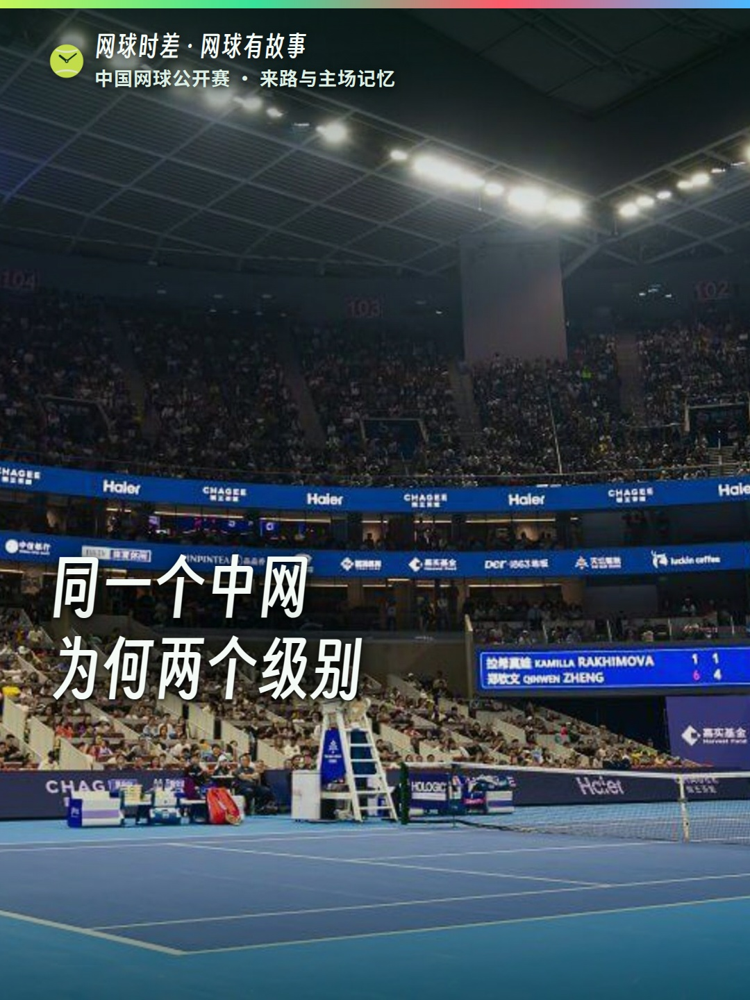

<div style="background-color:#f6f7f4;color:#17251f;padding:12px 10px;font-family:-apple-system,BlinkMacSystemFont,Segoe UI,sans-serif">
<div style="max-width:680px;margin:0 auto;background-color:#ffffff;border-top:5px solid #ff2442;padding:18px 0 22px">
<div style="padding:0 16px"><div style="display:inline-block;background-color:#e7f5ea;color:#087747;font-size:12px;font-weight:bold;padding:4px 8px;border-radius:4px">网球有故事</div>
<div style="font-size:23px;line-height:1.38;font-weight:800;color:#102d23;margin:10px 0 4px">9.27 网球有故事 | 中网为何有两个级别</div>
<div style="color:#7a8580;font-size:12px;margin:0 0 14px">☝️ 标题，长按这一行即可复制</div></div>
<div style="text-align:center;margin:0 0 16px;padding:0 16px"><a href="poster.jpg" style="color:#087747;font-size:13px;text-decoration:none">封面没显示？点此打开原图</a></div>
<div style="padding:0 16px">
<div style="font-size:15px;line-height:1.8;color:#25342e;margin:0 0 14px">同一个中网，女子是WTA1000赛，男子却是ATP500赛。沿着赛事身份、钻石球场、经典决赛和中国球员的主场记忆，重新认识中国网球公开赛。</div>
<div style="color:#7a8580;font-size:12px;margin:0 0 8px">👇 正文全文如下，长按整段即可复制</div>
<div style="font-size:15px;line-height:1.85;white-space:pre-wrap;word-break:break-word;margin:0 0 4px">中国网球公开赛：从光彩到钻石

女子WTA1000，男子ATP500。等级是两套巡回赛体系的分类，但看懂中网，还要看看它从光彩到钻石的变化，以及留下的比赛与主场记忆。

本片含历史资料画面。2026正赛9月30日开打，男单决赛10月6日，女单决赛10月11日；具体日程以官方更新为准。

你最难忘的中网记忆是哪一场？

#网球有故事 #中网 #中国网球公开赛 #网球时差</div>
</div>

<div style="padding:0 16px">
<div style="border-top:1px solid #e6ebe8;margin:18px 0 12px"></div>
<a href="https://github.com/robertyang87/tennislive/releases/download/reel-china-open-story/china-open-story.mp4" style="display:block;background-color:#102d23;color:#ffffff;text-align:center;text-decoration:none;font-weight:bold;padding:13px 16px;border-radius:6px;margin:0 0 7px">▶ 打开竖版成片</a>
<a href="https://robertyang87.github.io/tennislive/output/2026-09-27/reel/china-open-story/copy.html" style="display:block;background-color:#ff2442;color:#ffffff;text-align:center;text-decoration:none;font-weight:bold;padding:13px 16px;border-radius:6px;margin:0 0 7px">分别复制标题 / 正文</a>
<div style="text-align:center;color:#7a8580;font-size:12px">图片长按保存</div>
</div></div></div>